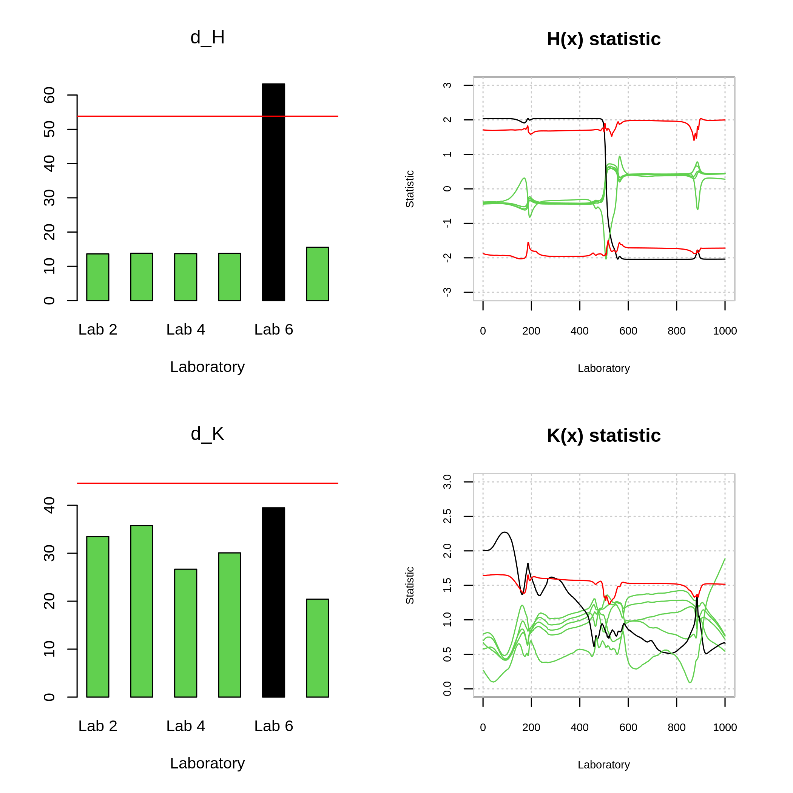

3. Interlaboratory Studies: New FDA Approach
A random variable \(\chi\) is a functional variable if it takes values in a functional space \(F\) (full normed or semi-normed). A particular case occurs when the functional variable \(\chi = {\chi(t) : t ∈ T}\), where \(T\) is an interval \(T ⊂ R\) that belongs to a Hilbert space, as is the case of continuous functions in an interval.
A set of functional data \(\chi_1, ....., \chi_n\) is the observation of \(n\) functional variables \(\chi_1, ....., \chi_n\) with the same distribution as \(\chi\). Where \(\chi\) is usually assumed to be an element of:
\[L_2(T) = \{f : T → R, \int_T f(t)^2dt < ∞\}\]
With the inner product \((f, g) = \int_T f (t) g (t) dt\).
The norm of \(\chi(t)\) is defined by:
\[||\chi(t)||=\left(\int_a^b X(t)^2 dt\right)^{\frac{1}{2}}\]
In this context, the ILS package is used to apply consistency tests (outlying detection) in an Interlaboratory Study. For this purpose, the TG dataset composed of the Thermogravimetric (TG) curves described in Examples of Interlaboratory Studies is used.
In this vignettes, we use the ILS package to perform the estimations and graphical representation of the statistics \(H(t)\), \(K(t)\), \(d_H\) and \(d_K\), with the aim to perform a r&R study for the datasets composed of functional data TG and DSC that are also included in the ILS package.
3.1. Hypothesis of reproducibility and repeatability
In the ILS studies, each laboratory performs n samples experimentally, obtaining n different curves of observations \(\{X_1^l(t),\ldots,X_n^l(t)\}\), which are obtained for each, \(l=1,\ldots,L\). Functional statistics \(H_l(t)\) and \(K_l(t)\) are calculated for each laboratory assuming the corresponding null hypothesis that there are no statistically different measurements between the laboratories.
The null hypothesis of reproducibility states that:
\[H_0: \mu_1(t)=\mu_2(t)=\cdots=\mu_p(t)\]
Where \(\mu_l(t), l = 1,\ldots,L\) is the functional mean of the population for each laboratory \(l\). To evaluate the reproducibility of the laboratory results, the \(H(t)\) statistic is calculated as follows:
\[H_l(t)=\frac{X_i^l(t)-\bar{X}(t)}{S_l(t)}; l=1,\ldots,L\]
Where \(\bar{X}(t)\) and \(S_l(t)\) are the mean and the functional point-to-point variance calculated for the \(l\) laboratory.
The null hypothesis of repeatability can be defined by:
\[H_0=\sigma_1^2(t)=\sigma_2^2(t)=\ldots=\sigma_L^2(t)\]
Where \(\sigma_l(t), l = 1,\ldots,L\) are the theoretical functional variances corresponding to each laboratory \(l\). The repeatability test is based on the statistic (\(K(t)\)), expressed as:
\[K_l(t)=\frac{S_l(t)}{\sqrt{\bar{S}^2(t)}}; l=1,\ldots,L \]
Where, \(\bar{S}^2(t)=\frac{1}{L}\displaystyle\sum_{l=1}^LS_l^2(t)\)
On the other hand, to test the reproducibility hypothesis, the test statistic \(d_H\) is defined as:
\[d_l^H=||H_l(t)||=\left(\int_a^b H_l(t)^2 dt\right)^{\frac{1}{2}}\]
Considering that the larger values of \(d_K\) correspond to non-consistent laboratories, for the repeatability hypothesis, we define \(d_l^K=||K(t)||\) and likewise, the large values of \(d_K\) correspond to non-consistent laboratories.
3.2. ILS: Thermogravimetric Study
The techniques developed to check if inconsistent laboratories are detected either by outliers in the within-laboratory or in between-laboratory variability, have been implemented in the ILS package. As above mentioned, laboratories 1, 5 and 6 have provided different results from the remaining laboratories and should be detected as outliers. We use the datasets described in 2.2, the TG dataset that contains Thermogravimetric test results from 7 laboratories, while the DSC dataset contains results from 6 laboratories (excluding laboratory 1). First you estimate the functional statistics \(H(t)\) and \(K(t)\) by the function mandel.fqcs(), then you make the corresponding graphs in the defined functional space.
library(ILS)
data(TG, package = "ILS")
delta <- seq(from = 40 ,to = 850 ,length.out = 1000 )
fqcdata <- ils.fqcdata(TG, p = 7, argvals = delta)
mandel.tg <- mandel.fqcs(fqcdata,nb = 10)
plot(mandel.tg,legend = T,col=c(rep(3,5),1,1))TG dataset: The right panels show the functional statistics \(H(x)\) (up) and \(K(x)\) (below) for each laboratory, whereas the left panels show the \(d_H\) (up) and \(d_K\) (below) test statistics for each laboratory.
Figure 7, shows both the \(K(t)\) and \(H(t)\) statistics for each laboratory, as well as the \(d_K\) and \(d_H\) contrast statistics. The control limit between short lines is constructed at a significance level \(\alpha = 0.01\) corresponding to the critical values \(c_K\) and \(c_H\). The following code refers to the use of the ILS package into the TG dataset.
data(DSC, package = "ILS")
fqcdata.dsc <- ils.fqcdata(DSC, p = 6, index.laboratory = paste("Lab",2:7),
argvals = delta)
mandel.dsc <- mandel.fqcs(fqcdata.dsc,nb = 10)
plot(mandel.dsc,legend = F,col=c(rep(3,4),1,3))
DSC dataset: The right panels show the functional statistics \(H(x)\) (up) and \(K(x)\) (below) for each laboratory, whereas the left panels show the \(d_H\) (up) and \(d_K\) (below) test statistics for each laboratory.
Interlaboratory Study defined by the DSC dataset. Thus, Figure 8 shows that repeatability hypothesis was not reject. Otherwise, the reproducibility’s hypothesis was rejected in the case of laboratory 6 (see Figure 8), that is properly detected as an outlier.